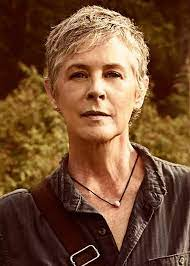
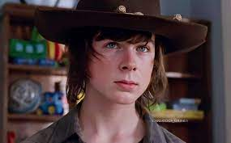
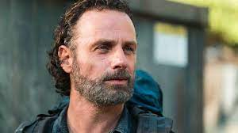
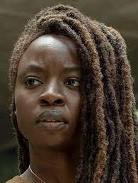
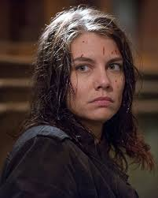

Personages.
Daryl

Daryl is at first a brazen, surly, impulsive redneck but develops himself as an integral part of the group due to his survival skills. His aggression is unprecedented, and it remains one of his most valuable assets, as well as one of his most noticeable. Following the deaths of Ed and Sophia Peletier, Daryl has developed a close bond with fellow survivor Carol Peletier. He later formed a brief yet close bond with another fellow survivor Beth Greene before her demise.
Carol
After discovering that her daughter was bitten and reanimated, Carol, now the last surviving member of her family, gradually builds inner strength, becoming increasingly proficient with weapons, and gains medical experience through Hershel Greene's assistance. Later on, she becomes the parental guardian of Lizzie and Mika Samuels after the death of their father, albeit briefly. Upon her arrival at the Alexandria Safe-Zone, Carol briefly forms a romantic relationship with fellow Alexandrian Tobin and becomes an adviser to Rick Grimes following Hershel's death. 
Carl
As time progresses, Carl slowly becomes hardened due to the severe loss of life and the environment around him. He has shown to be more than willing to assist and protect the people he cares about, especially Michonne Hawthorne, another survivor who he regards as a mother figure and his best friend. After reaching the Alexandria Safe-Zone he forms a friendship with fellow teenage survivor Enid. This friendship eventually blossoms into a relationship, though it becomes somewhat strained and uncertain after Enid's relocation to the Hilltop Colony.
Rick
He is a former sheriff's deputy who was shot in the line of duty and fell into a coma, only to awaken and find himself in the midst of the apocalypse. He travels to Atlanta, Georgia, in search of his wife, Lori, and his son, Carl, who have traveled to Atlanta with his best friend, Shane Walsh. After reuniting with his family, along with discovering a group of survivors, Rick gradually becomes the de-facto leader in their search of a safe haven. He eventually enters a relationship with Michonne Hawthorne and they later conceive a child together. He later becomes the leader of the Alexandria Safe-Zone and one of the four co-leaders of the Militia along with Maggie Rhee, Ezekiel Sutton. 
Michonne
Following the loss of her boyfriend and toddler, she withdrew into solitude perfecting her swordsmanship and becoming a dark and ruthless warrior. After the Greene family farm was overrun by zombies, Michonne encountered Andrea and began to open up as the two developed a close friendship while surviving the winter together.Eventually, they encountered the Governor and were brought to Woodbury. Andrea decided to remain at Woodbury but Michonne, sensing that The Governor couldn't be trusted, left and soon encountered Rick Grimes and the Survivors. Though initially distrustful of each other, Michonne assimilated into the group after bonding with Carl. She soon became a core member of the group, as well as Rick's right-hand woman and eventually, the two formed a more intimate relationship.
Maggie
She is the daughter of Hershel and Josephine Greene, stepdaughter of Annette Greene, older half-sister of Beth, younger stepsister of Shawn, and the last known surviving member of the Greene family. She is the widow of Glenn Rhee and the mother of Hershel. She is currently the leader of the Hilltop Colony, and was one of the four co-leaders of the Militia, along with Rick Grimes, Ezekiel, and Cyndie before its disbanding. At some point after Rick's assumed death, she left the Hilltop alongside her son to join Georgie's group and search for new communities. 